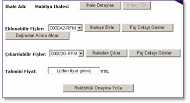

Kullanýcýnýn “Yeni Açýlmýþ Ýhaleler” den birini seçerek “Yönetim” düðmesini týklamasý sonucunda bu sayfa açýlýr. Buradan ihale detaylarýný görüntülemek için “Ýhale Detaylarý” düðmesi týklanýr. Ýhaleye eklemede bulunmak için “Eklenebilir Fiþler” den biri seçilir ve “Ýhaleye Ekle” düðmesi týklanýr, “Fiþ Detay Göster” týklanarak da (satistektakip) Ýstek Takip Sayfasýna gidilerek fiþin detayýna ulaþýlabilir. Bunlarla birlikte “Çýkarýlabilir Fiþler” bölümünden seçilecek bir fiþ de ihaleden “Ýhaleden Çýkar” düðmesini týklayarak çýkarýlabilir veya detaylarý “Fiþ Detayý Göster” düðmesi týklanarak incelenebilir.

Bunlarla birlikte, “Tahmini Fiyat” Kutucuðu doldurularak “Rektörlük Onayýna Yolla” düðmesi týklanarak ihale rektörlük onayýna yollanýr ve aþaðýdaki onay sayfasý açýlýr.
“Tahmini Fiyat” kutucuðuna eðer sayýsal bir ifade girilmediyse bir uyarý belirir ve kullanýcýdan bu bilgiyi doðru þekilde girmesi istenir.